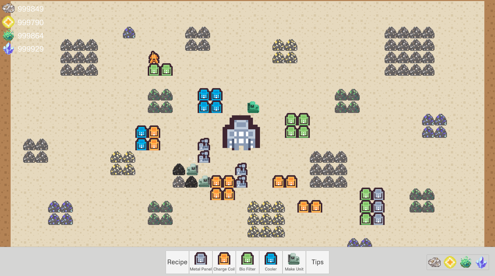

About the game
인게임 화면
로그라이크와 시뮬레이션의 결합
시뮬레이션 장르에 로그라이크 장르의 핵심 시스템을 융합하여, 고정된 공략이 아닌 주어진 상황에 맞춰 끊임없이 새로운 생존 전략을 구상
'조합'과 '분해'를 통한 기지 건설
단순히 건물을 짓고 파괴하는 것이 아닌, 기존 건물을 합치고 분해하며 기지를 성장시키는 독특한 재미
간접 조작을 통한 '최적화'
플레이어는 게임 내 유닛을 직접 조종할 수 없지만, 적절한 위치에 건물을 배치하거나 채굴할 자원을 지정해주는 등 간접적으로 유닛을 조작하고, 최종적으로 복잡한 생산 라인을 효율적으로 구축
멸망한 문명을 재건하기 위한 여정
단순히 오래 생존하거나 무한히 확장하는 것이 아닌, '시드 코어'를 가동해 모선으로 복귀하는 것이 목표. 모선을 강화하고 더 많은 행성을 탐사하며 문명의 몰락에 얽힌 비밀을 풀어나갑니다
게임 소개
한때 은하계를 호령했던 초고도 문명 '선조'는 원인 모를 대정화 현상으로 모든 것이 소멸해 멸망해버렸습니다. 선조들은 최후의 순간 직전, 자신들의 기술과 정보가 담긴 탈출용 함선을 우주 저편으로 급하게 쏘아 올렸죠.
안타깝게도 이 마지막 함선에 생명체를 태울 시간은 없었습니다. 오직, 이 모든 것을 책임지고 관리하는 당신, 관리자격 의식체만이 끝없는 어둠 속으로 항해를 시작했습니다.
당신은 마침내 대정화 현상의 근원에 대한 실마리를 포착했고, 그 실마리는 당신을 한 미지의 행성으로 이끌었습니다.
행성 표면의 주요 지점에 탐사 캡슐을 투하하여 전략적인 기지를 건설하고, 문명 재건에 필요한 자원을 확보하십시오. 선조들의 기술을 연구하며 기지를 확장하고 행성에 숨겨진 비밀들을 발견하세요!
개발팀의 이야기
Q. Asterisk를 개발하게 된 계기
저희는 기존 명작 시뮬레이션 게임(림월드, Factorio 등)과 로그라이크 게임(슬레이 더 스파이어, 발라트로 등)들을 플레이하며 해당 장르에 빠지게 되었습니다.
하지만 늘 기존 게임들이 가진 아쉬운 점, 예를 들어 '전략의 깊이는 있지만 매번 똑같은 빌드를 사용해야 한다'는 점에 아쉬움을 느꼈고, 사람들이 시뮬레이션 장르에 관심을 가져도 높은 진입장벽으로 인해 쉽게 입문하지 못한다는 것을 깨달았습니다.
또한 로그라이크 게임의 경우 매번 바뀌는 랜덤성으로 인해 새로운 플레이 경험을 느끼게 되지만, '영구적 죽음'이라는 요소로 인해 그동안 쌓아온 것이 무너지는 순간 큰 좌절을 겪게 되죠.
이런 게이머들의 고민을 해결하고자 '시뮬레이션과 로그라이크 장르의 장점을 가져와보면 어떨까?' 라는 생각을 하게 되었고, 여기에서 Asterisk가 탄생하게 되었습니다.
Q. 게임의 주 타겟층
이런 플레이어에게 추천합니다!
Q. 개발 계획 및 로드맵
게임소식 받기
Asterisk의 개발 여정에 함께하세요!
데모 버전을 가장 빠르게 받고 싶다면 이메일을 등록해주세요